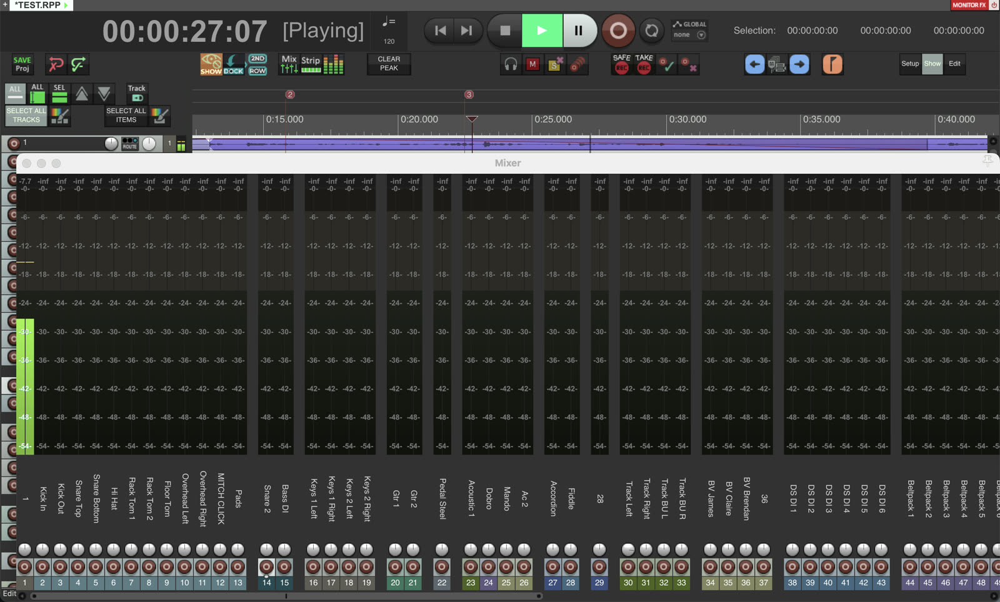
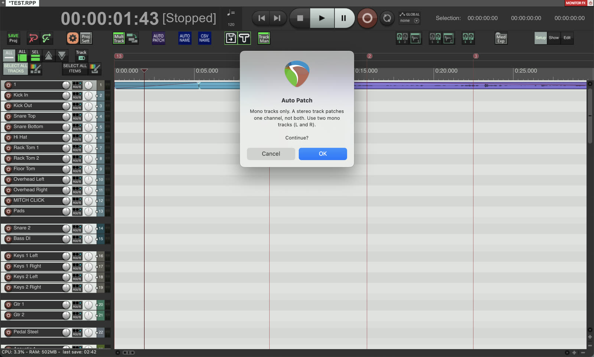
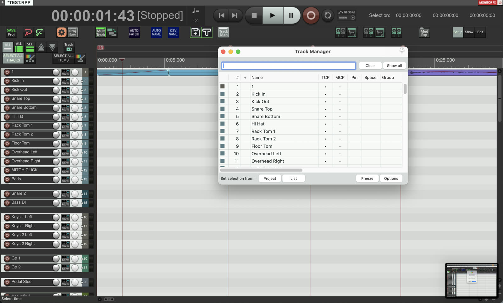
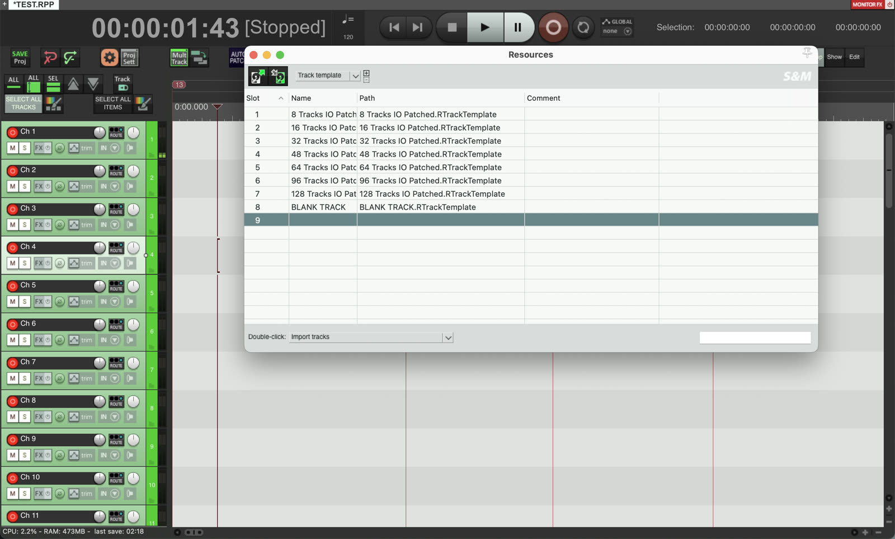
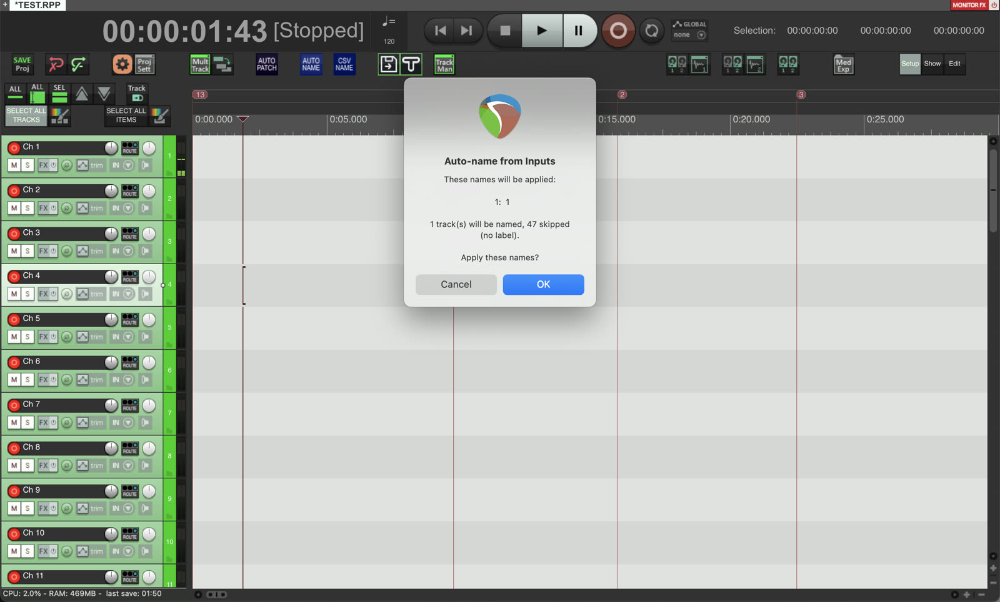

A free REAPER setup for live multitrack recording and virtual soundcheck, plus a Plugin Host template for running a live insert plugin.
The whole BSK live recording rig in one free download.
A record-ready project template (48kHz WAV), track templates that drop in 8 to 128 tracks pre-named and patched 1:1 to hardware inputs, all seven scripts below, the BSK toolbars (setup, show, editing, views and automation) with icons, and window sets for meter bridge and mixer views. Includes an installer for Mac and Windows and a README with the full steps. Requires REAPER 7 and the free SWS Extension for the toolbars.
Download BSK REAPER Live Recording Setup (ZIP)Prefer to keep it separate from your main REAPER? The portable version has the same setup already wired into a portable REAPER folder - drop REAPER in and run it, nothing merged into your existing install.
Download BSK REAPER Live Recording Portable (ZIP)Show views
Window sets give you a full meter bridge and mixer view with every channel named and patched, one keystroke apart.

Patching
Every track lands on its matching hardware input - no manual routing pass before the first soundcheck.

Overview
See every live track, its record arm and its input in one list, so nothing sneaks into a take unarmed.

Templates
Track templates for every rig size, pre-named and pre-patched, from a bar gig to a festival split.

Naming
Pulls the input labels straight off your interface and names the tracks to match.

Included in both downloads above, not a separate download.
Six tracks (4 mono + 2 stereo) patched for a discrete insert send/return, record-disabled so they can never end up in a multitrack take, with a PLUGIN HOST toolbar to bypass all six at once, show/hide FX, and flip fader metering between pre and post so the meters actually move when you ride the makeup gain. Two optional FX chain presets add a free metering plugin either side of your own. Good for anything you need live in the signal path during a show rather than after it - feedback suppression like Alpha Labs Defeedback, or real-time pitch correction like Waves Tune RT. Keep it as its own project rather than merging into a recording session.
Drop these into your REAPER Scripts folder and assign them to actions or toolbar buttons.
Starts playback only if stopped or paused. Does nothing if already playing or recording. Designed to make your Stream Deck transport buttons safe.
Download BSK_Transport_Safe_Rec_Play.luaPauses if playing, unpauses if paused (including paused recording). Does nothing if stopped or actively recording. Designed to make your Stream Deck transport buttons safe.
Download BSK_Transport_Safe_Rec_Pause.luaStarts recording only if not already recording. Designed to make your Stream Deck transport buttons safe.
Download BSK_Transport_Safe_Rec_Record.luaImports channel names from a console offline editor export and creates or renames tracks. Detects format automatically - works with Allen & Heath (dLive, Avantis, SQ), Yamaha (CL, QL, Rivage), or any plain text file with one name per line.
Download BSK_Import_Track_Names.luaNames each track from the input label your audio interface reports for its assigned hardware channel. Previews the proposed names and only applies them after you confirm. Use the CSV import above if your interface does not pass channel labels through.
Download BSK_AutoName_From_Inputs.luaPatches all tracks 1:1 to mono hardware inputs and outputs. Sets pre-FX sends at unity gain, disables master send and monitoring. Shows a summary when done. Every track is patched as mono, one per hardware channel, so a stereo source like overheads needs two mono tracks (left and right). A single stereo track only patches one channel and shifts the tracks below it.
Download BSK_AutoPatch_HW_1to1_Mono.luaRemoves all hardware sends and restores master send and monitoring on every track. An extreme undo button for AutoPatch.
Download BSK_AutoPatch_HW_Teardown.luaAdd scripts directly to REAPER from the downloaded files.
Actions > Show action listReaScript: Load and browse to the downloaded .lua file.Install and update scripts automatically using ReaPack. Requires ReaPack to be installed.
Extensions > ReaPack > Import a repositoryhttps://raw.githubusercontent.com/BSKapps/BSK-Reaper-Scripts-/main/index.xmlExtensions > ReaPack > Browse packagesCompanion's REAPER module uses REAPER's web interface to trigger actions remotely.
Preferences > Control/OSC/web > Web browser interface - enable it and note the port (default 8080).Copy selected action command ID - it will look like _RS3a4f.... Note this for each script.